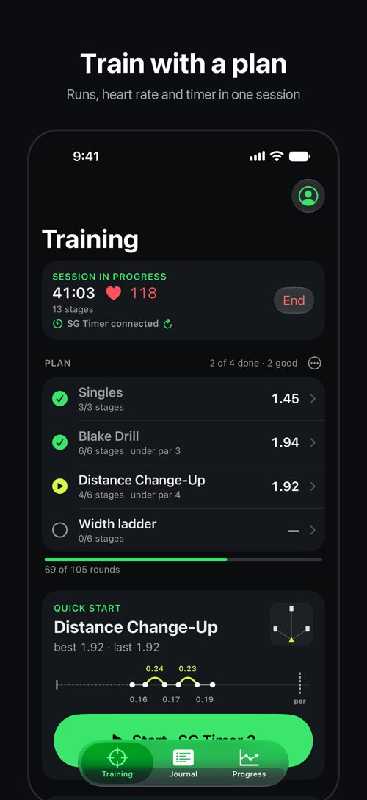
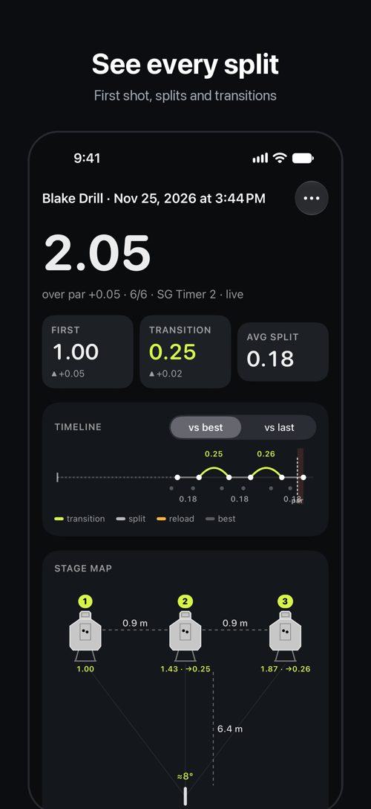
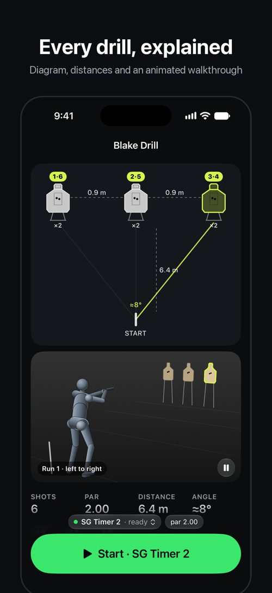
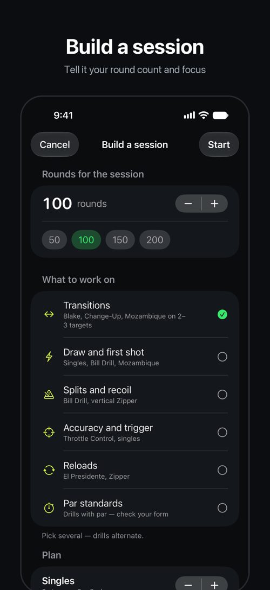
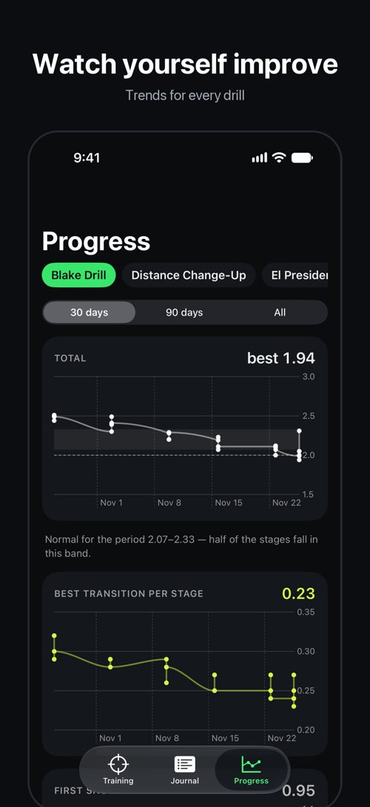

Shooter Ready: Drill Training
Drill timer and training log for sport shooters, for iPhone and Apple Watch.





What it does
Every split and transition
Shot times of a drill broken down into first shot, splits, target transitions and reloads.
Three ways to get times
Live from an SG Timer 2 over Bluetooth, the phone timer with start signal and par, or manual entry.
Training sessions
All runs of a range trip in one session, with heart rate from Apple Watch.
Session builder
Enter your round count and what to work on; get a plan from the drill library.
Apple Watch
Start and stop from the wrist, live time, plan and heart rate.
Progress
Journal of every run, best and average per drill, trends over time.
Private by design
No account, no ads, no tracking. Your data stays on your iPhone and Apple Watch.
Shooter Ready is a training log and timer. Always follow firearm safety rules and the rules of your range. SG Timer is a trademark of Shooters Global; the app is not affiliated with Shooters Global, IPSC or IDPA.